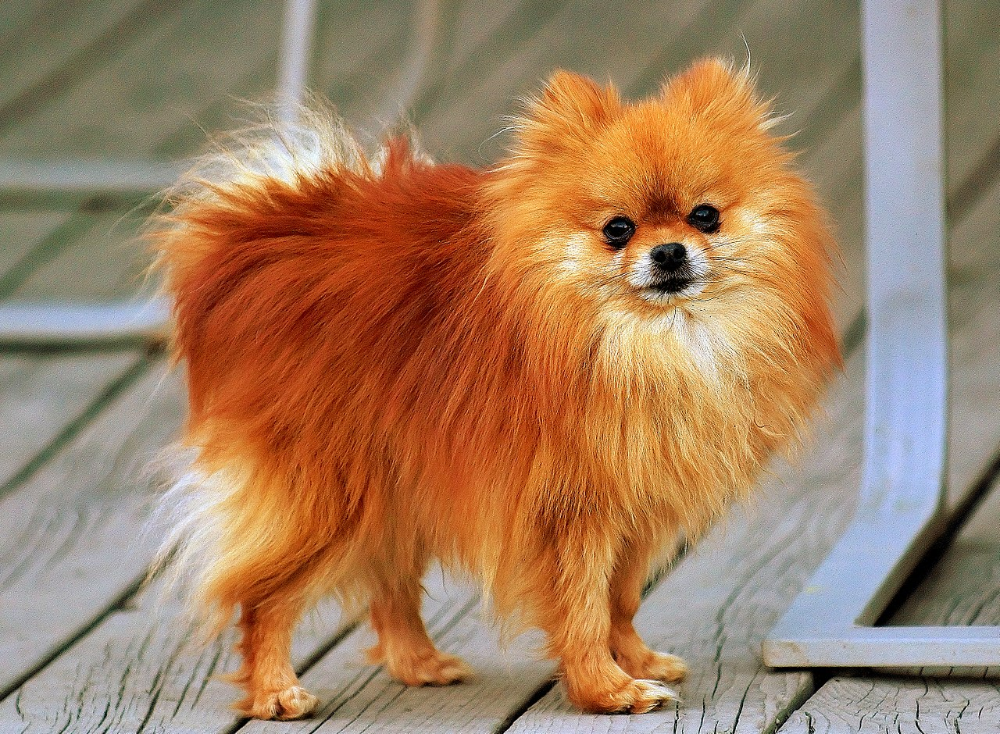

Maylie Vu
Business Technology Management student, minor Computer Science
Extra curricular
- Best e-waste management solution (2021, by TechTalent Accelerator)
- Best solution for operational excellence (2020, by Loblaws)
- Hack the North Participant (2020, at Waterloo University)
- Top 200 (Ted Rogers School of Management)
CPS courses that I like (so far)
- CPS 406: Intro to Software Engineering
- CPS 530: Web Systems Development
- CPS 613: Human-Computer Interaction
4 things that I look forward the most this year
- Graduate with good score and enjoy the last bit of uni life
- My graduation ceremony where I can see my parents in person
- Coming back to Vietnam for vacation
- Having my first puppy here in Canada. I would love a pomeranian that look like this

By Rob Hanson - Pomeranian Coco, CC BY 2.0, https://commons.wikimedia.org/w/index.php?curid=2086085